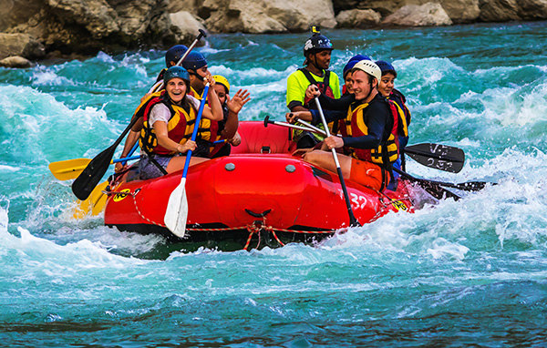
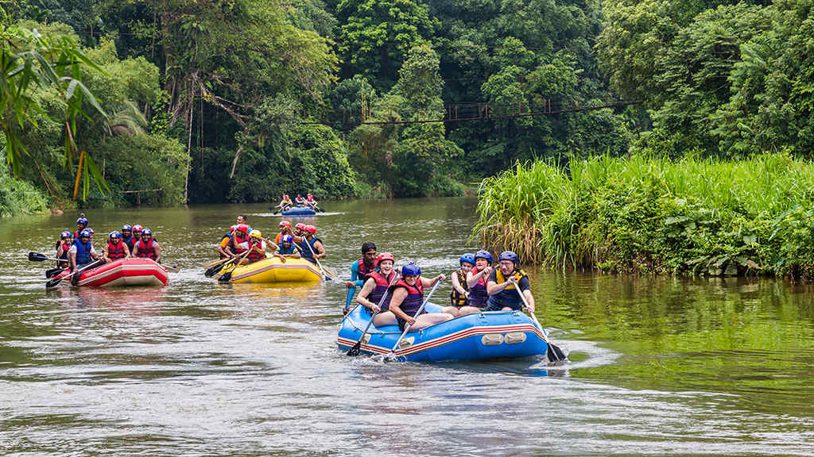
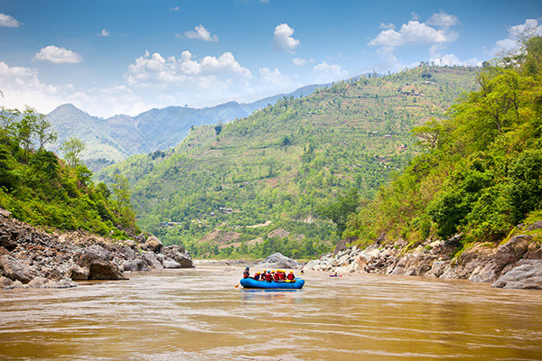

Thunder Rapids
A two-hour trip with exciting waves and calmer stretches between rapids. Paddle together with your guide and enjoy the river scenery. This moderate adventure is a good choice for active groups.

Choose a river adventure for you, your friends, or your family.

A two-hour trip with exciting waves and calmer stretches between rapids. Paddle together with your guide and enjoy the river scenery. This moderate adventure is a good choice for active groups.

A relaxed three-hour trip through a green forest landscape. Learn basic paddling skills with your guide while enjoying gentle water. This easy route is ideal for beginners and families.

A six-hour adventure with mountain views, steady paddling, and a riverside break. Explore a longer route with your guide. This moderate trip suits visitors who want a full day outdoors.
| Trip | Duration | Level |
|---|---|---|
| Thunder Rapids | 2 hours | Moderate |
| Jungle River Run | 3 hours | Easy |
| Mountain Valley Expedition | 6 hours | Moderate |
| Crystal Canyon Adventure | 3 hours | Moderate |
| Wild Rapids Challenge | 4 hours | Challenging |
Times are approximate. Contact us to check availability.